Overview
The following tutorial will guide you through the initial steps of getting your audio from CRIWARE ADX2 to work with CRYENGINE, using the Audio Controls Editor (ACE) and Audio System Controls.
Initial Steps with ADX2 in CRYENGINE
Setting up ADX2 in CRYENGINE
Enable the ADX2 middleware in CRYENGINE's Console by setting the s_ImplName CVar to CryAudioImplAdx2. Alternatively, you may add the following line to your system.cfg or user.cfg file (located in your CRYENGINE project's root folder):
s_ImplName = CryAudioImplAdx2
ADX2 Project and Soundbank Locations
ADX2 specific data is located in the following locations of your CRYENGINE project by default:
- Soundbanks
<ProjectFolder>\assets\audio\adx2\assets - ADX2 Project
<ProjectFolder>\assets\audio\adx2_project
CRYENGINE checks the above folders to locate all ADX2 Controls and CueSheet Binaries, that it then displays in the ACE.
To set a different path for your ADX2 project, select the Edit → Preferences option in the Audio Controls Editor's
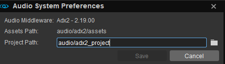
Audio System Preferences
ADX2 Project and CueSheet Binaries
CueSheet Binaries are the ADX2 equivalent of Soundbanks that are used by other audio middleware. When shipping your game, make sure to include only the CueSheet Binaries in the game's folder as they contain all the data from your ADX2 project.
Verifying the Supported ADX2 Version
CRYENGINE is always updated to support the latest version of ADX2.
To make sure that you're using the correct version of ADX2 with CRYENGINE, open the Audio Controls Editor. The ADX2 version supported by your Engine build is indicated in the header of the ACE window, as shown below.
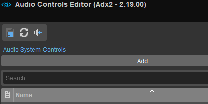
ACE Editor Header
CRYENGINE 5.6 supports ADX2 version 2.19.00 and AtomCraft version 2.35.19.
Creating an Audio Setup for CRYENGINE in ADX2
If you are new to ADX2, we recommend that you read the ADX2 user manual or watch the official video tutorials created by CRIWARE.
Creating a Sound Cue in CRI Atom Craft
In Atom Craft (ADX2's Authoring Tool), you can import an audio file into a Cue by dragging and dropping it onto a CueSheet. You could also drag and drop the file into the folder called MaterialRootFolder in the Materials Tree, before dragging and dropping it onto a CueSheet to create a Cue.
The FX/AISAC Window in Atom Craft allows you to adjust various settings for each Cue; this window is found below the Timeline window.
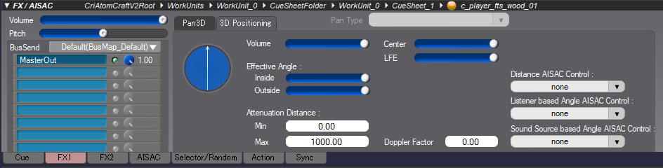
FX/AISAC window
Building CueSheets in Atom Craft
You have to build a CueSheet to integrate a new Cue into your game.
The Cue Sheet Binary which gets created during this build process can be loaded by CRYENGINE. To build a CueSheet:
- Select the Build → Build Atom CueSheet Binary... option from Atom Craft's main menu. Alternatively, you can use the Ctrl + B shortcut.
- In the Build Atom CueSheet Binary window that opens, set the target platform under the Targets panel on the left.
- Select the CueSheets you'd like to build from under the CueSheets panel on the right, and click Build at the bottom-right of the window.
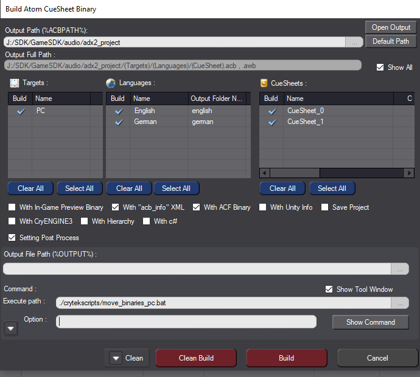
Build Atom CueSheet Binary
CueSheet binaries must be stored under <ProjectFolder>/audio/adx2/assets in order for them to be detected by the ACE. To automate this:
- In the Build Atom CueSheet Binary window, click the Default Path button beside the Output Path field to set it to the default path. Also, activate the Setting Post Process checkbox.
- Download crytek_audio_scripts.zip and copy the custom script into a folder named crytekscripts within your AtomCraft project folder.
- Enter ./crytekscripts/move_binaries_pc.bat in the Execute path field of the Build Atom CueSheet Binary window. This batch file moves all general CueSheet Binaries to the <ProjectFolder>/audio/adx2/assets folder and all localized soundbanks to the <ProjectFolder>localization/ folder.
- Lastly, make sure that only the With "acb_info" XML and With ACF Binary options are activated in the Build Atom CueSheet Binary window. Use the Build AtomCueSheet Binary image above for reference.
AtomCraft should now build all CueSheet Binaries in the correct location.
Streaming Assets
If you intend to use streaming, select the audio asset you want to stream from the Materials Tree in AtomCraft, and then set Streaming Type to Stream in the Inspector window.
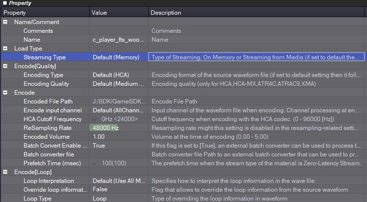
Streaming Type
The ACE should now be able to recognize ADX2 controls and Cue Sheet Binaries. Now that the Atom Craft setup is complete, open the ACE in CRYENGINE by going to Tools → Audio Controls Editor.
Connecting ADX2 Controls to Audio System Controls
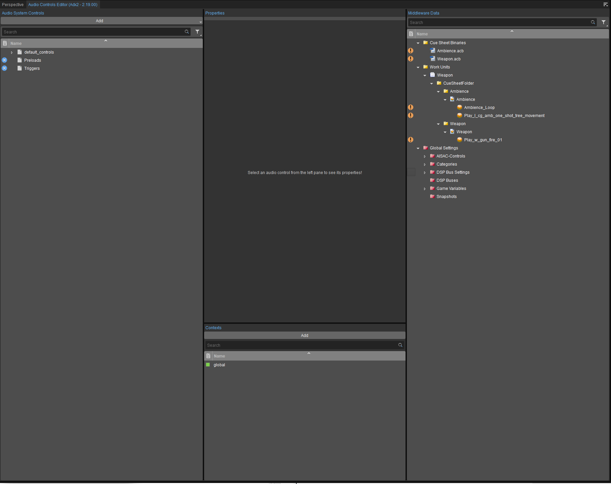
ACE
The ACE lists all ADX2 controls contained in your CRI Atom Craft Project, as well as all generated CueSheet Binaries. These Controls and CueSheet Binaries need to be connected to CRYENGINE's Audio System before they can be integrated into your level.
To do so:
- Create a new Library in the Audio System Controls panel of the ACE;
- Drag and drop the ADX2 controls into the newly created Library. CRYENGINE will automatically create the corresponding Audio System Controls, naming them after their ADX2 counterparts.
The two kinds of Audio System Controls that can be created are Triggers and Preloads; a Trigger is used to call an ADX2 Cue, while a Preload is used to load ADX2 CueSheet Binaries (that contain all data related to a Cue) to memory.
Since CRYENGINE requires ADX2 CueSheet Binaries that contain Cue data to be loaded in order to play sounds within a level, please make sure to connect your ADX2 CueSheet Binaries to Preloads, and update them, every time you add new content to your ADX2 project.
Also ensure that the Auto-Load property of a created Preload is activated; the value of its Context property meanwhile, can be left to Global. More information on these properties can be found here.
Placing an Audio Trigger in the Game
In order to hear a created audio Trigger in-game it needs to be connected to an audio Entity placed within your level, such that the Entity executes the audio Trigger during gameplay.
An audio Trigger can also be previewed within the ACE by double-clicking it, or by pressing spacebar when it is selected.
For each level, it is recommended that you create a dedicated layer in the Level Explorer for all your audio data.
- Open the Level Explorer using the Tools → Level Editor → Level Explorer option from the Editor's Main Menu.
- Select the File → New Layer option from the Level Explorer's

When a layer is set as the active layer (highlighted in blue), all Entities that you place within your level will automatically be included under this layer.
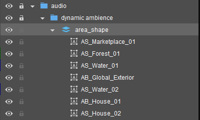
Active layer
Next, open the Create Object tool (Tools → Level Editor → Create Object) and select the Audio → Audio Trigger Spot Entity. Place this Entity in your level.
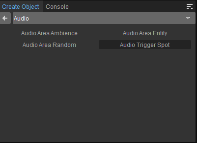
Audio Trigger Spot
It is recommended that you give your audio Entities abbreviations to improve readability in large projects. For example, an Audio Trigger Spot called frog_idle can be named ats_frog_idle.
Once the Audio Trigger Spot Entity has been placed, navigate to the Play Trigger Name field in the Editor's Properties panel. Click the
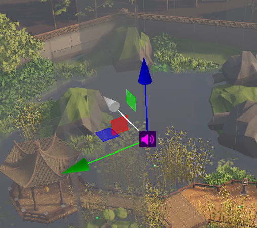
Placed Audio Trigger Spot
If the Stop Trigger Name field is left empty, CRYENGINE will automatically stop the ADX2 Cue from playing when a StopTrigger is executed. This behavior is the same in all places where a StopTrigger can be used in CRYENGINE.
If you'd like the sound to fade-out however, you need to create an AHDSR Modulation for the volume in CRI Atom Craft before adding a StopTrigger in the Audio Controls Editor:
- Open the Cue you'd like to fade-out and select the audio material that is placed on the audio track in the Cue.
- In the FX/AISAC window, open the FX2 section and set the value of the Release field under the Envelope section to 2000; this should cause the sound to fade out over 2 seconds.
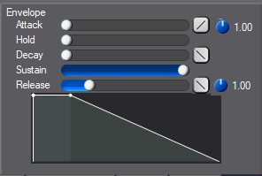
Release
This AHDSR Modulation can also be used to create fade-ins.
To stop a Cue from playing in the game, create a Stop Trigger in the Audio Controls Editor:
- Create a new Trigger in the ACE. To this Trigger, connect the same Cue used for your PlayTrigger.
- With the newly created Trigger selected in the Audio system Controls window, set the Action field in the ACE's Properties panel to Stop.
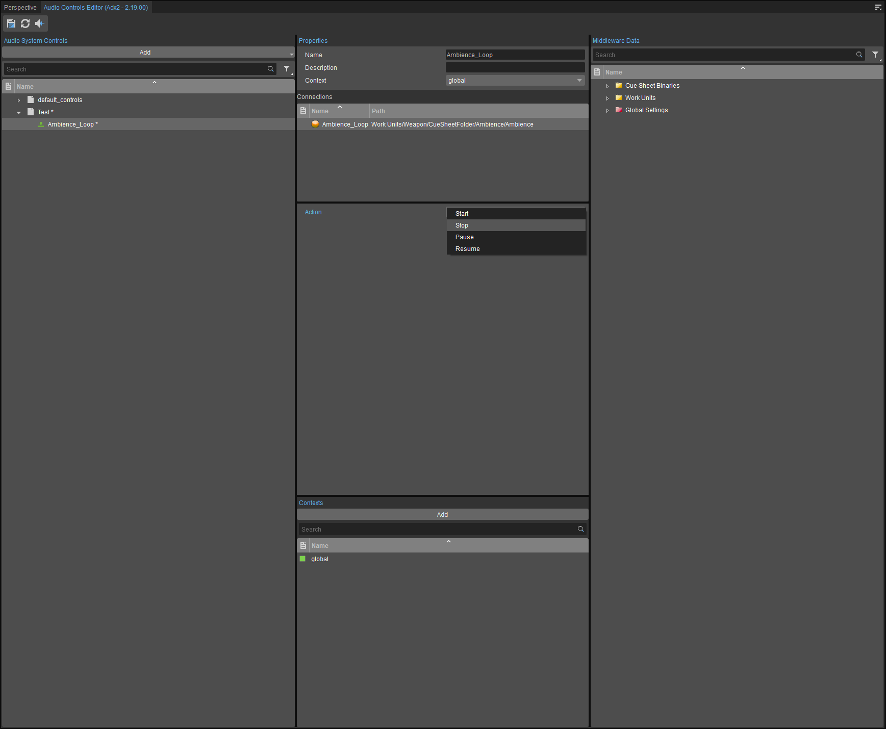
Action
It is also possible to use an Action Track within AtomCraft to stop Cues.
- Create a new Cue in AtomCraft, right click within the Timeline window and select the New Object → Create Action Track option.
- Right-click the created Action Track and select the New Object → Create Stop Action option; drag and drop the Cue which needs to be stopped onto the Action Track.
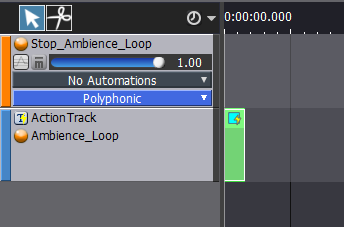
Action Track
Use prefixes in the names of Triggers or Cues to indicate whether they're used to start (Play_...) or stop (Stop_...) a sound.